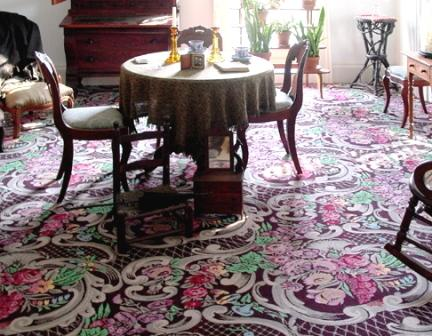
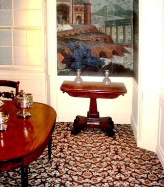

Federal/Early 19th Century
Belle Grove Plantation, Shenandoah Valley, nr. Middletown, VA
(parlor and dining room, with Kevin Hereford and Jean Dunbar, consultants)
Colonial Society of Massachusetts, Boston, MA (office, library)
Concord Museum, Concord, MA (Federal period room)
Dumbarton House, National Society of the Colonial Dames of America
Georgetown, Washington, DC (dining room, with Jean Dunbar, consultant)
Gardner Pingree House, Peabody Essex Museum (PEM), Salem, MA
(parlors, stair hall, office, master bedroom and guest room)
Gore Place, Waltham, MA (stairs)
Gracie Mansion, Historic House Trust of New York City, New York, NY
(with Ronald Weiss Creative Floors)
Granger Homestead, Granger Homestead and Carriage Museum, Canandaigua, NY
(hall, dining room)
Hedge House, Plymouth Antiquarian Society, Plymouth, MA (parlor, entrance hall, stair)
Thomas Griswold House, Guilford Keeping Society, Guilford, CT (parlor)
John Jay Homestead, New York Parks and Recreation Dept., Katonah, NY
(parlor, dining room, back parlor, library, stairs)
King Caesar House, Duxbury Rural & Historical Society, Duxbury, MA (best parlor)
Lemon Hill, National Society of the Colonial Dames of America, Fairmont Park
Philadelphia, PA (parlor)
McLellan Sweat House, Portland Art Museum, Portland, Maine
(parlor, stair hall, dining room, music room, NE bedchamber, SE bedchamber)
Montpelier Mansion, Maryland-National Capital Park and Planning Commission,
Laurel, MD (parlor and dining room)
Montpelier, National Trust for Historic Preservation, Orange, Virginia
(dining room, with Jean Dunbar, consultant)
Moffat-Ladd House, National Society of the Colonial Dames of America, Portsmouth, NH
(dining room)
Phelps-Hatheway House, Connecticut Landmarks, Suffield, CT (sitting room, dining room)
Pierce Nichols House, Peabody Essex Museum (PEM), Salem, MA (parlor)
Point of Honor, Lynchburg Museum, Lynchburg, VA (parlor)
Robert Bennett Forbes House, Milton, MA (stair)
Riversdale, Riversdale Historical Society, Riverdale, MD (dining room)
Williams House, Historic Deerfield, Deerfield, MA (parlor)
William Scarbrough House, Savannah, GE (three exhibit rooms)
Sherman Home, Fairfield Heritage Association, Lancaster, OH (parlor)
Avery Downer House/Robbins Hunter Museum, Granville, OH (parlor)
Bartow-Pell Mansion, Historic House Trust of New York City,
Pelham Bay Park, NY (parlors, stairs, bedchamber)
General Reasin Beal House, Wayne County Historical Society,
Wooster, OH
Beauregard-Keyes House, New Orleans, LA (hall)
Josiah Bell House, Beaufort Historical Association, Beaufort, NC (parlor)
Belle Meade Mansion, Nashville, TN
(parlor, library, bedroom, with Gail Winkler, consultant)
Amos Blanchard House, Andover Historical Society, Andover, MA (parlor)
Bowen House, Historic New England/SPNEA, Woodstock, CT
(dining room, stair hall, conservatory)
Bulloch Hall, Roswell, GA (stair)
Cudner-Hyatt House, Scarsdale Historical Society, Scarsdale, NY
Dr. Eells House, Historical Society of Quincy and Adams County, Quincy, IL
(parlor-sitting room, with Gail Winkler, consultant)
Dow House, Old St. Augustine Village, St. Augustine, FL (parlor)
Ebenezer Maxwell Mansion, Germantown, Philadelphia, PA (bedroom suite)
Emerson Study, Concord Museum, Concord, MA
(original study of Ralph Waldo Emerson)
Fallon House, City of San Jose, San Jose, CA (parlor)
Federal Hill, My Old Kentucky Home, Kentucky State Parks, Bardstown, KY
(hall, parlor, library, dining room with Kevin Hereford, consultant)
Fort Delaware, Delaware State Parks, Wilmington, DE (offices)
Governor John Wood Mansion, Historical Society of Quincy and Adams County, Quincy, IL (with Gail Winkler, consultant)
Ham House, Dubuque County Historical Society, Dubuque, IA
(parlor, stair hall, dining room)
The Hermitage, President Andrew Jackson home, Hermitage, TN (stairway)
The Hermitage, Ho-Ho-Kus, NJ (front and back parlors)
Lanier Mansion, Indiana State Museum, Madison, IN
(dining room, parlor, library, stair hall, bedchambers and back hall, with Michael Brown, Gail Winkler and Kevin Hereford consultants)
Livingston-Bachus House, Genesee Country Village and Museum, Mumford, NY
(parlor, dining room and stair)
Melrose Plantation, National Park Service, Natchez, MS (parlor, library, bedroom)
Murray House, Naper Settlement, Naperville, IL (parlor)
Noah Webster House, Edison Institute, Henry Ford Museum and Greenfield Village, Dearborn, MI (dining room)
Orchard House, home of the Alcotts, Concord, MA (parlor, library)
Raynham Hall Museum, Oyster Bay, NY (parlor, dining room)
Rose Hill, Geneva Historical Society, Geneva, NY (double parlors)
Sanford Farmhouse at Old World Wisconsin, Wisconsin State Historical Society,
Eagle, WI (parlor)
Ten Broeck Mansion, Albany County Historical Association, Albany, NY (hall)
Wadsworth-Longfellow House, Maine Historical Society, Portland, Maine
(sitting room, parlor, stair)
Waveland, Lexington, KY (parlor, stair hall, dining room)
Wheatland, President James Buchanan Foundation/LancasterHistory.org, Lancaster, PA (parlor, sitting/dining room, library)
Wills House, Gettysburg National Historic Site, National Park Service, Gettysburg, PA (bedroom)
Mid Victorian (Italianate, Second Empire)
Thomas Bailey Aldrich Memorial, Strawbery Banke Museum, Portsmouth, NH (parlor)
Cappon House, Holland Museum, Holland, MI (with Gail Winkler, consultant)
Cocalico Valley Historical Society, Ephrata, PA (parlor, stair)
Culbertson Mansion, Indiana State Museum, New Albany, IN (parlor and dining room)
Chapman Historical Museum, Glen Falls, NY (stair)
General Crook House, Douglas County Historical Society, Fort Omaha, Omaha, NE
(bedroom, parlor)
Fenton History Center, Fenton Historical Society, Jamestown, NY (parlor)
Firestone Farmhouse, Henry Ford Museum & Greenfield Village, Dearborn, MI
(hall and stair)
Flynn Home, Living History Farms, Urbandale, IA (parlor)
Fountain Elms, Munson Williams Proctor Institute, Utica, NY (stair)
General Grant House, Galena State Historic Sites, Galena, IL (stair hall, dining room)
Hackley House, Muskegon County Museum, Muskegon, MI (parlor and bedroom)
Harrison Gray Otis House, Historic New England/SPNEA, Boston, MA
(boarding house bedroom)
Heritage Museum of Kappa Kappa Gamma, Columbus, OH (parlor)
Hoyt-Potter House, Landmark Society of Western New York, Rochester, NY
(parlors, reception room, stair)
Hunter-Dawson House, Missouri State Parks and Historic Sites, New Madrid, MO (parlor)
Kelton House Museum, Junior League of Columbus, Columbus, Ohio
(stair hall, parlor, sitting room, bedroom)
Lace House, City of Black Hawk, Colorado (with Kathy Hoeft of Long Hoeft Architects)
Lincoln-Tallman House, Rock County Historical Society, Janesville, NY
Lyndhurst, National Park Service, Tarrytown, NY (office)
Martin-Mitchell House, Naper Settlement, Naperville, IL
(sitting room, dining room, stair hall, downstairs bedroom, office, upstairs chamber, master bedroom, Kittie's room, Lizzie's room.)
Oswego County Historical Society, Oswego, NY (parlor)
Prospect House, Princeton Faculty Club, Princeton, NJ (stair hall)
Ramsey House, Minnesota Historical Society, St. Paul, MN (reception room)
Pico House, El Pueblo de Los Angeles, City of Los Angeles, California (bedroom, stairs)
Saxton-McKinley House, National First Ladies' Library, Canton, OH
(parlor, stair hall, ballroom, President McKinley's library)
President William Howard Taft Boyhood Home, National Park Service, Cincinnati, OH
(parlor, library)
Tower Grove, Missouri Botanical Garden, St. Louis, MO (parlor, sitting room and stair)
Victorian Cottage Museum, Lombard Historical Society, Lombard, IL (stairs)
Victorian house, Maine Maritime Museum, Bath, ME (parlor)
Washburne House, Galena State Historic Site, Galena, IL
(parlor, dining room, library, stair hall, master bedroom and guest room)
Whaley House, Old Town San Diego State Historic Park, San Diego, CA (parlor)
Late Victorian (Reform Gothic, Queen Anne, Shingle Style, Romanesque Revival, Colonial Revival)
Baldwin Cottage (Queen Anne Cottage), Los Angeles County Arboretum, Arcadia, CA (parlor rug)
Billings Farm & Museum, Farm Managers House, Woodstock, VT
(parlor, sitting room, stairs, dining room)
Comstock House, Minnesota Historical Society, Moorhead, MN (stairhall, sitting room, library and parlor)
Craigdarroch Castle, Victoria, BC, Canada (stair hall, library,
dining room, bedroom)
Crozier Center, Kenyon College, Gambier, Ohio (parlor with Jean Dunbar, consultant)
Emlen Physick Estate, Mid-Atlantic Center for the Arts, Cape May, NJ (wallpapers)
Fairlawn, Superior, Wisconsin
(hall, parlor, music room, sitting room, dining room, library, with Gail Winkler, consultant)
Glenview, Hudson River Museum, Yonkers, NY (parlor)
Lawnfield, President James Garfield House, National Park Service, Mentor, OH (dining room)
Historic Fort Wayne, Detroit, MI (Commanders Res. rug)
Historic General Dodge House, Council Bluffs, IA (stair hall)
Hotel de Paris, National Society of the Colonial Dames of America, Georgetown, CO (stairs, bedroom with Kathy Hoeft of Long Hoeft Architects, consultant)
Isaac Bell House, Preservation Society of Newport County, Newport, RI (library)
International Tennis Hall of Fame (Newport Casino), Newport, RI (entry stair, exhibition, library)
Mark Twain House, Mark Twain House and Museum, Hartford, IL (library, stair, billiard room)
McHenry Mansion, Modesto, CA (stair hall, reception room, parlors)
Mohonk Mountain House, Lake Mohonk, New Paltz, NY (parlor rug)
Moody Mansion & Museum, Galveston, TX (hall, bedrooms)
New York Bar Association Headquarters, Albany, NY (parlor)
Olana State Historic Site, New York Parks & Recreation Dept., Hudson, NY (great hall)
Rosemount Museum, Pueblo, CO (stair)
Stonehurst, Robert Treat Paine House, Waltham, MA (Autumn Parlor)
Villa Louis, Wisconsin Historical Society, Prairie du Chien, WI
(parlor, sitting room, bedrooms, verandah, with Gail Winkler, consultant)
Volkening Heritage Farm, Schaumberg, IL (parlor)
Wyandotte Historical Society, Wyandotte, MI (parlor)
Zimmerman Farmhouse, Conner Prairie, Fishers, IN (parlor, stair hall, bedroom)
Ecclectic Interiors preserved in earlier homes
Codman House/The Grange, Historic New England/SPNEA, Lincoln, MA (stair)
Florence Griswold House, Florence Griswold Museum, Old Lyme, CT (guest room, bedroom, stair hall)
Lorenzo, New York State Parks, Cazenovia, NY (parlor, dining room, stairs, bedroom)
Lyman Estate, Historic New England/SPNEA, Waltham, MA (library)
Prescott House, National Society of the Colonial Dames, Boston, MA (stair hall)
Beaux Arts, Colonial Revival,
Turn-of-the Century/ Early 20th Century, Tudor
Barker Civic Center, Michigan City, IN (stair hall, parlor)
Bayou Bend, Museum of Fine Arts, Houston, Houston, TX
(McIntire Bedroom, Belter Parlor, Chillman Suite)
Campbell House, Northwest Museum of Arts and Culture, Spokane, WA
(parlor, reception room, bed chambers)
Dawes House, Evanston Historical Society, Evanston, IL (den, bedroom)
Grey Towers, U.S. Forestry Service, Milford, PA
Hawkins House, Rogers Historical Museum, Rogers, AR (parlor)
Hill-Stead Museum, Farmington, CT (Theodate's bedroom, Mulberry bedroom)
John Muir House, National Park Service, Martinez, CA
Klondike Gold Rush National Historical Park, National Park Service, Skagway, Alaska
Kykuit, Rockefeller family estate, National Trust for Historic Preservation, Pocantico Hills, NY
(upper floors halls and stair)
Maymount, Richmond, VA (parlors with Jean Dunbar, consultant)
Meadow Croft Estate, Bayport Heritage Assoc., Bayport, NY
Tempe Historical Society, Tempe, FL
Vachel Lindsay House, Springfield, IL (parlor, library, dining room, hall, bedroom)
Voigt House, Public Museum, Grand Rapids, Michigan (stair)
Wright Brothers House, Henry Ford Museum and Greenfield Village, Dearborn, MI (parlor)
Arts & Crafts
Sarah Orne Jewett House, Historic New England/SPNEA, South Berwick, MA
(Morris 'The Wreath' stair hall carpet)
Civic Buildings
Arkansas Capitol Building, Little Rock, AR (Governor's Reception Room and Old Supreme Court Chamber)
Charleston County Courthouse, Historic Charleston Foundation, Charleston, VA
(law library, probate court room, non-jury courtroom; with Jean Dunbar, consultant)
Colonnade Club, University of Virginia, Charlottesville, VA (with Jean Dunbar, consultant)
Driskill Hotel, Austin, TX
Goodnow Hall, Grinnell College, Grinnell, IA (stair)
Gracie Mansion, NYC Mayor's official residence, NY (dining room)
Illinois Capitol Building, Springfield, IL (Senate & House Chambers)
Indiana University of Pennsylvania, Indiana, PA
Ingomar Club (Carson Mansion), Eureka, CA (stair hall, parlor)
Iolani Palace, Honolulu, Hawai'i (Blue Room, Music Room, Grand Stairs)
Iowa Capitol Building, Des Moines, IA
(Governor's Office, Old Supreme Court Chamber, Old Supreme Court Consulting Room, Old Judicial Offices, Treasury Office, Old Railroad Committee office)
Kappa Alpha Order Fraternity Headquarters, Lexington, VA (with Jean Dunbar, consultant)
Massachusetts State House (Senate President's office, and Senate committee room)
New Bedford Whaling Museum Visitors Center, New Bedford, MA (main hall)
Northern Arizona University, Flagstaff, AZ (Old Main)
Old Governor's Mansion, Milledgeville, GA
Old Mississippi Capitol Museum, Mississippi Department of Archives and History, Jackson, MS (House and Senate chambers, Governor's office)
Salem City Hall, Salem, MA (Council Chamber)
Second Bank of Tennessee Building (JRN Chicken Stores), Columbia, TN
Vermont Capitol Building (Cedar Creek Room), Montpelier, VT
Virginia Capitol Building, Richmond, VA
Virginia Executive Mansion (parlor and sitting room, with Jean Dunbar, consultant), Richmond, VA
Walker House, San Dimas, CA (stair hall, meeting rooms, restaurant)
Warwick County Courthouse
Wisconsin Capitol Building (Supreme Court Chamber)
Ecclesiastical Buildings
Channing Church, UU, Rockland, MA (Fireplace Room)
Christ Church, Episcopal, Raleigh, NC (aisles in nave, transepts)
Church of the Advent, Boston, MA (stenciling in rectory hall)
Church of the Redeemer, UU Meetinghouse, Provincetown, MA
(entrance stair hall and aisles in sanctuary)
First Congregational Church of Litchfield, Litchfield, CT
Mt. Vernon Baptist Church, Watkins Mill State Historic Site, Lawson, MO
Nauvoo Temple, LDS Church, Nauvoo, Illinois
(extensive carpets and lace curtains throughout the building)
St. John the Evangelist, Episcopal, Boston, MA (chancel)
Art Museums and History Museums
Clark Institute, Williamstown, MA (gallery carpet)
Florence Griswold Museum, Old Lyme, CT (Florence Griswold House)
Genesee Country Museum (Livingston-Bachus House)
Hudson River Museum, Yonkers, NY (Glenview)
Isabella Stewart Gardner Museum, Boston, MA (100th anniversary exhibition gallery rugs)
Maine Maritime Museum, Bath, ME
Maine State Museum, Augusta, ME (Victorian farm parlor, At Home In Maine permanent exhibit)
Museum of Fine Arts, Houston, Houston, TX (Bayou Bend period rooms)
Mystic Seaport, Mystic, CT (vignette for mid-19th century house)
Northwest Museum of Arts & Culture, Spokane, WA (Campbell House)
Peabody Essex Museum (PEM), Salem, MA
(Gardner-Pingree House, carpets for Samuel McIntire: Carving an American Style exhibition, 2007, Pierce Nichols House)
Portland Art Museum, Portland, ME (McLellan Sweat House)
Saint Louis Art Museum, St. Louis, MO (Newburyport and Salem period rooms)
Ships of the Sea Museum, Savannah, GE (William Scarbrough House)
Taft Art Museum, Cincinnati, OH (all major galleries and hallways)
Telfair Art Museum, Savannah, GE (Owens-Thomas House)
Virginia Museum of Fine Arts, Richmond, VA (with Jean Dunbar, consultant)
Whistler House Museum of Art, Lowell, MA (gallery)
Organizations
Andover Historical Society, Andover, MA
Brown University, Providence, RI (Alumni House)
California State Parks (John Muir House, Pico House, Whaley House)
Colonial Society of Massachusetts, Boston, MA
Concord Museum, Concord, MA (Great Hall rug, Federal room, Emerson study)
Connecticut Landmarks
Conner Prairie, Fishers, IN
Delaware State Parks (Fort Delaware)
Douglas County Historical Society, Omaha, NE
Dubuque County Historical Society, Dubuque, IA
Duxbury Rural & Historical Society, Duxbury, MA (King Caesar House)
Evanston Historical Society, Evanston, IL
Genesee Country Village and Museum, Mumford, NY (Livingston-Bachus House)
Geneva Historical Society, Geneva, NY (Rose Hill)
Georgia College & State University, Milledgeville, GA (Old Governor's Mansion)
Grinnell College, Grinnell, IA (Goodnow Hall)
Henry Ford Museum and Greenfield Village, Dearborn, MI
(Firestone Farmhouse, Noah Webster House, Wright Bros. House)
Historic Deerfield, Inc., Deerfield, MA (Williams House)
Historical Society of Quincy and Adams County, Quincy, IL
(Dr. Eells House, Governor John Wood Mansion)
Historic Charleston Foundation (Charleston County Courthouse)
Historic House Trust of New York City (Bartow-Pell House, Gracie Mansion)
Historic New England, SPNEA
(Bowen House, Codman House, Harrison Gray Otis House, Lyman Estate, Sarah Orne Jewett House)
Illinois Historic Preservation Agency (Vachel Lindsay House)
Indiana State Museum (Culbertson Mansion, Lanier Mansion)
Junior League of Columbus, Columbus, OH (Kelton House)
Kentucky State Parks (Federal Hill, My Old Kentucky Home)
Kenyon College, Gambier, OH (Crozier Center)
LancasterHistory.org, Lancaster, PA (President James Buchanan's Wheatland)
Landmark Society of Western New York, Rochester, NY (Hoyt-Potter House)
Living History Farms, Urbandale, IA (Flynn Home)
Lombard Historical Society, Lombard, IL
Maine Historical Society, Portland, ME (Wadsworth-Longfellow House)
Mark Twain House and Museum, Hartford, Connecticut (Mark Twain House)
Maryland-National Capitol Parks and Planning Commission (Montpelier Mansion)
Massachusetts Senate Art Committee
Minnesota Historical Society (Comstock House, Ramsey House)
Mississippi Department of Archives and History, Jackson, MS (Old State Capitol Museum)
Missouri State Parks and Historic Sites
(Hunter-Dawson House, Mt. Vernon Baptist Church)
Muskegon County Museum, Muskegon, MI (Hackley House)
Naper Settlement, Naperville, IL (Martin-Mitchell House, Murray House)
National Park Service
(Garfield House, John Muir House, Klondike Gold Rush NHP, Melrose Plantation)
New Bedford Whaling Museum Visitors Center, Wills House, William Howard Taft Boyhood Home)
National Society of the Colonial Dames of America in the State of Colorado (Hotel de Paris)
National Society of the Colonial Dames of America in the State of Indiana (Lanier Mansion)
National Society of the Colonial Dames of America in the State of Massachusetts (Prescott House)
National Society of the Colonial Dames of America in the State of New Hampshire
(Moffat-Ladd House)
National Society of the Colonial Dames of America, Philadelphia Chapter
National Society of the Colonial Dames of America, Washington, DC (Dumbarton House)
National Trust for Historic Preservation (Kykuit, Lyndhurst, Montpelier)
National First Ladies' Library, Canton, OH (entrance hall of main building)
New Hampshire Historical Society
New York Parks and Recreation Dept. (John Jay Homestead, Lorenzo, Olana, Schuyler Mansion)
New York State Bar Association Headquarters, Albany, NY
Rock County Historical Society, Janesville, WI
Rogers Historical Museum, Rogers, AR
State of Illinois, Galena State Historic Sites (General Grant House, Washburne House)
Strawbery Banke Museum, Portsmouth, NH (Aldrich Memorial)
Texas Historical Commission Headquarters, Austin, TX
University of Virginia, Charlottesville, VA (Colonnade Club)
U.S. Forestry Service (Grey Towers)
Wayne County Historical Society, Wooster, OH (General Reasin Beal House)
Wisconsin Historical Society (Villa Louis, Sanford Farmhouse at Old World Wisconsin)
Buildings of Significant Historic American Designers and Architects
Ogden Codman, Kykuit (1913), The Grange/Codman House (c.1920)
Alexander Jackson Davis, Lyndhurst (1838,1864)
William Jay, Owens-Thomas House (1817), William Scarbrough House (1819)
Samuel McIntire, Gardner-Pingree House (c.1804), Pierce Nichols House (1782-1801)
H.H. Richardson, Stonehurst (1882)
Louis Comfort Tiffany, Mark Twain House (c.1880), Lawnfield/Garfield House (c. 1880), Billings Mansion (c.1890)
Stanford White, Newport Casino (1880)
Calvert Vaux, Olana (1872)
Homes of Historical Celebrities
Louisa May Alcott (author)
President James Buchanan
President Calvin Coolidge (office)
Frederic Church (artist)
F. Holland Day (photographer, publisher)
Ralph Waldo Emerson (author's study)
Harvey Firestone (boyhood home of tire manufacturer)
President James Garfield
President Ulysses S. Grant
President Andrew Jackson
Sarah Orne Jewett (author)
President Andrew Johnson
John Jay (President of the Continental Congress, First Chief Justice of the United States)
King Kalakaua (palace)
Queen Lili`uokalani (palace)
General Robert E. Lee (ancestral home)
President Abraham Lincoln (office)
President James Madison
President William McKinley (office)
William Morris (designer, author, publisher's country home)
Edgar Allan Poe (author)
John D. Rockefeller (industrialist)
Vice President Nelson Rockefeller (New York governor)
Laurence S. Rockefeller (venture capitalist, philanthropist, conservationist)
General William Tecumseh Sherman (boyhood home)
President William Howard Taft (boyhood home)
Mark Twain (Samuel Clemens, author)
Henry Wadsworth Longfellow (author's boyhood home)
President George Washington
Noah Webster (dictionary publisher)
James McNeil Whistler (artist's boyhood home)
Wilbur and Orville Wright
Architects and Designers
Bayberry House Interiors, Marshall, MI
Anne Beha, architect, Boston, MA
David Berman, Trustworth Studios, Plymouth, MA
Kenyon Bolton III & Assoc., Cambridge, MA
Michael Brown, R.M. Brown Design Associates Inc., Millerton, NY
Caroline Interiors, Sioux Falls, SD
Downer & Mostue Architects, Cambridge, MA
Jean Dunbar, Historic Design, Inc., Lexington, VA
Penny Eskra Interiors, Eureka, CA
Feingold Associates Interior Design, Inc., Kansas City, MO
Mimi Findley, New York, NY
Anna Francis Studio, Cochranville, PA
H-K Design, Nancy Barnard, Lincoln, MA
Kevin Hereford, historic design consultant, Milton, KY
Pam Hicks Designs, Houston, TX
Kathy Hoeft of Long Hoeft Architects, Georgetown, CO
Susan Hollis, Historic Interiors, Concord, MA
Deborah Kraak, Wilmington, DE
Clem Labine, founder of the Old-House Journal, Prospect Heights, Brooklyn, NY
Mark Landsberg, architect, Newton, MA
Allison Leopold (writer on Victorian design), NY, NY
Anne Lenox, Partners in Design, Newton, MA
Joseph Pell Lombardi, architect, Irvington-on-Hudson, NY
David and Larry Marshall, Upholstered Room Inc., Brooklyn, NY
Tom McGrath, designer, Boston, MA for Robin Cook, novelist, Lewisburg Square, Boston
and Trump Tower, NYC
Mesick, Cohen & Waite Architects, Albany, NY
Keithley Miller Interior Design Inc., St. Louis, MO
John Neale, architect, Boston, MA
Carol Prisant, designer, Roslyn, NY
Jeremiah Rusconi, historic preservation consultant and designer, Hudson, NY
Rutledge Interiors, Deborah Griffin, ASID, Nashville, TN
David Schwartz Architectural Services Inc.
William Seale, Georgetown, DC
Smith Garrett Architects, Charlottesville, VA
Peter Snell, architect, Los Angeles, CA
Ellen Spencer Period Interiors, Winchester, MA
Robert A.M. Stern Architects, New York, NY
Nancy Stoddart Associates, New York, NY
The Studio, Provindence, RI
Michael Switzer Associates, San Francisco, CA
Laurie Taylor, Ivy Hill Interiors, Seattle, WA
James Van Dyke Interiors, Ipswich, MA
Van Vliete Interiors, Moline, IL
Robert Venturi, architect, Philadelphia, PA
Victorian Interiors, Abilene, KS
Vitetta Group, Philadelphia, PA
Volz & Associates, Candace Volz, Austin, TX
Gail Winkler, LCA Associates, Philadelphia, PA
Go Back to Burrows Studio Consulting Services
Go to J.R. Burrows & Company Main Page